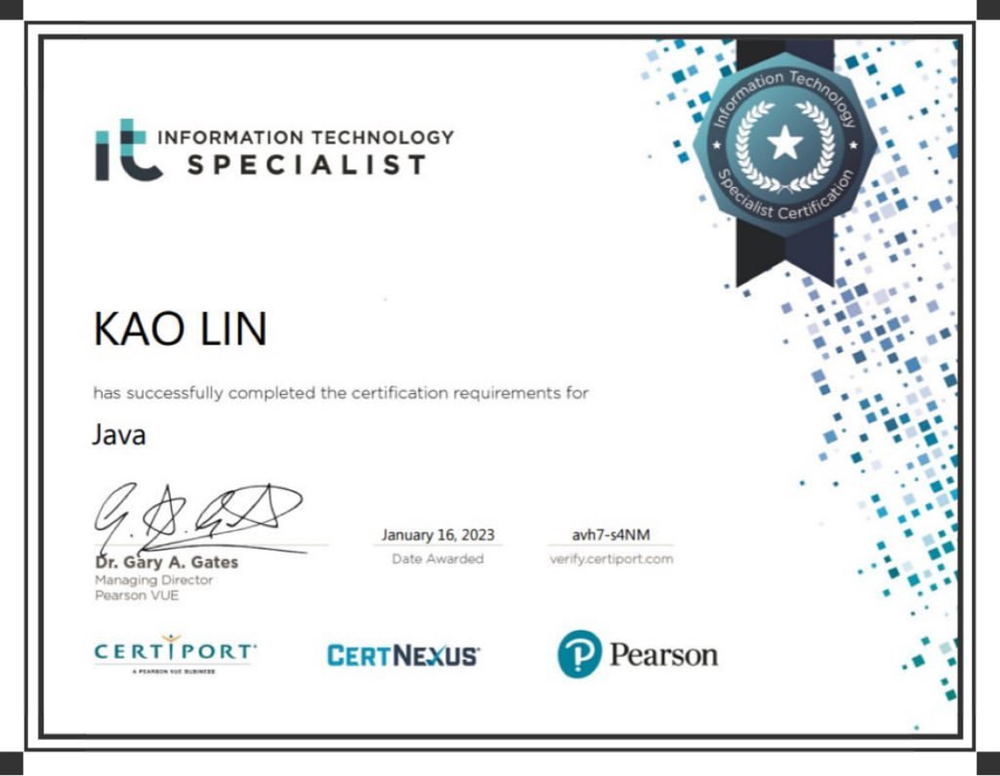
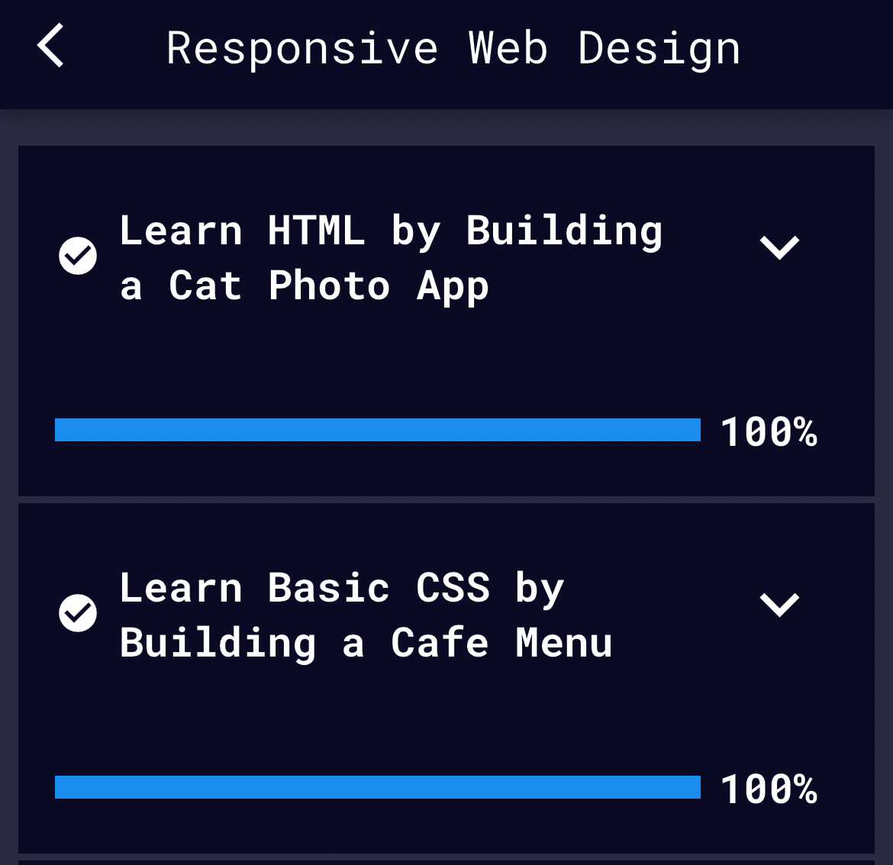

高琳的申請書
兩百字內的個人簡介
我是高琳，畢業於國防大學理工學院的環境資訊及工程學系軍事工程組，於2018年畢業後在陸軍第十軍團各所屬單位歷練領導及幕僚職，並於2023年12月退伍。
軍旅生涯的5年間，我在領導職學會管理超過百人的團隊，且於2022年因表現優異獲頒陸軍獎狀；也在幕僚職上學習到專案管理及如何以專業立場與上司溝通。
然而對軍職體系有所瞭解後，確定此非我熱情所在，我決定轉往軟體產業並規劃2025年前往愛爾蘭發展。
為了成為軟體工程師，做過什麼努力？若有具體作品請分享給我們。
- 聯成電腦Java基礎班，利用假日學習
- 透過影音及社群平台瞭解軟體工程師工作日常及職涯發展，如加入line相關社群、追蹤youtube工程師創作者
- 提升英打速度
- 取得ITS的認證
- 利用FreeCodeCamp學習HTML及CSS
- 聯成電腦Java網站開發（4/1前完課）


如果參與這個訓練，會怎麼安排學習時間？
在2023年12月退伍後，我利用3個月完成退輔會報到、退伍金的理財規劃、處理好家庭生活瑣事並安排愛爾蘭留學申請期程。
4月課程開始直到畢業，除適度運動及維持英文能力外，我將全心投入課程任務，有充足的時間應對每週40～60小時的學習份量。
說明會中強調訓練學員將不斷面對困難，但我對於自己的學習能力、邏輯思考及毅力有信心可以跟上課程
是否有想要加入的公司？為什麼想加入該公司？
我希望加入Google位於愛爾蘭的歐洲總部，原因有以下幾點：
- 作為全球最知名的科技公司之一，在Google工作將能接觸到最頂尖的人群，看看各路大神怎麼工作怎麼生活
- Google以輕鬆隨意的企業文化著名，秉持著工作有挑戰也有歡樂，在佔據一半人生的工作期間，我希望感受自己的工作是有價值且快樂的
- 我痛恨Google map常分不清車輛在高架道上還是平面道路，為了用路安全我必須去改善這個系統
請描述一件產生明顯負面情緒的經歷，如何處理該情緒？
因軍中固化的階級及年資壓制，我擔任營級幕僚時，曾被年資大8年的連級主官在會議上羞辱。
當時對方不滿我在會議上提報他的連隊卻未提前告知，所以在會議上對我惡言相向，然而事實上我已經多次通知他的副主官及業參。
我確信我的作法沒有問題且我主官也給予我支持，於是會議後我積極與對方溝通此次誤會及討論未來合作模式。
這次有效率地化解危機不但讓長官認同我的溝通能力，我與學長也在新的合作模式中相互欣賞，調職後也持續互相提供資源及助力。
被誤會且在公眾場合遭到言語羞辱的委屈我會在日記中抒發，並且無論多糟的一天，我都會在日記中寫下3個感謝。
堅持這個習慣已經3年，日記幫助我公平客觀的敘述事情經過、抒發感想及轉念，也幫助我在回頭看時明確的感受自己的成長。
關於這份申請網頁，分享一個開發時的技術心得。
以前習慣讀懂課本、看完教學影片後在練習實作，但因為內容太多，常做到一半卡住又要回頭翻課本。
但這次我嘗試先理解基礎架構，跳過眾多的元素、屬性，先開始寫申請網頁，需要放圖片時在看影片學習如何置入，這讓我更有效率的完成申請書，且使用過的元素也更容易記住。
請用簡短兩三句話，描述對你而言，最重要的一項人際交往原則。
在不免強自己的前提下交朋友，欣賞並學習旁人的優點。
其他想要對我們說的事情？
- 我規劃2025秋季入學愛爾蘭 MSc Computer Science (Conversion) at UCD
- 聯成電腦的課程以傳統教學模式專注於Java上，相比起單一的語言，我認為更需要了解整個電腦科學的基礎知識及獨立學習的能力，所以報名了WeHelp的訓練，但入學前兩邊都會完成。
- 我的目標是在申請學校前累積作品，嘗試申請非Conversion的課程。